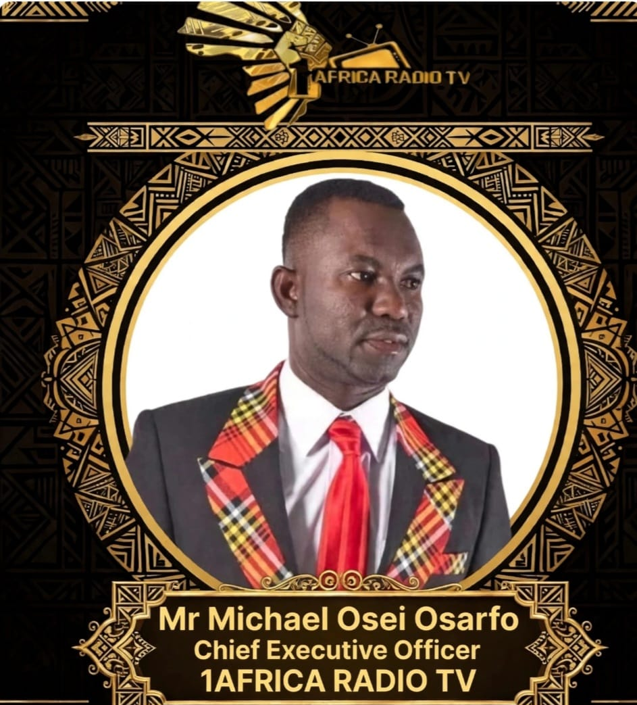
MICHAEL OSEI OSARFO
Chief Executive Officer (CEO)
Michael Osei Osarfo is the dynamic CEO of African Online Radio TV, a leading platform that amplifies African voices and showcases the continent's rich cultural tapestry. With a background in communications and digital media, Michael has over a decade of experience in the broadcasting industry.
Under his leadership, 1Africa Radio TV has expanded its reach, connecting millions of listeners and viewers globally with authentic African content. Michael is passionate about leveraging technology to enhance media accessibility and promote local talent, ensuring that diverse narratives are heard and celebrated.
ceo@1africaradiotv.com
Under his leadership, 1Africa Radio TV has expanded its reach, connecting millions of listeners and viewers globally with authentic African content. Michael is passionate about leveraging technology to enhance media accessibility and promote local talent, ensuring that diverse narratives are heard and celebrated.
ceo@1africaradiotv.com
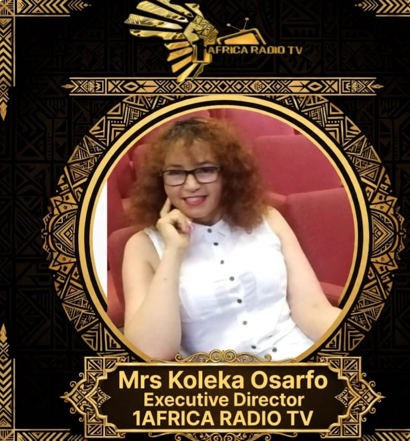
MRS KOLEKA OSARFO
Executive Director
Koleka Madubela is the Executive Director of an innovative African online streaming radio station, where she leads efforts to deliver diverse and engaging content to audiences across the continent and beyond.
With a strong background in media management and digital broadcasting, Koleka has dedicated over 12 years to enhancing the visibility of African voices in the global media landscape. A passionate advocate for women in media, Koleka actively mentors young female broadcasters and promotes initiatives that empower underrepresented voices in the industry. Her commitment to social impact and community engagement has earned her recognition as a thought leader in the African media space.
With a strong background in media management and digital broadcasting, Koleka has dedicated over 12 years to enhancing the visibility of African voices in the global media landscape. A passionate advocate for women in media, Koleka actively mentors young female broadcasters and promotes initiatives that empower underrepresented voices in the industry. Her commitment to social impact and community engagement has earned her recognition as a thought leader in the African media space.
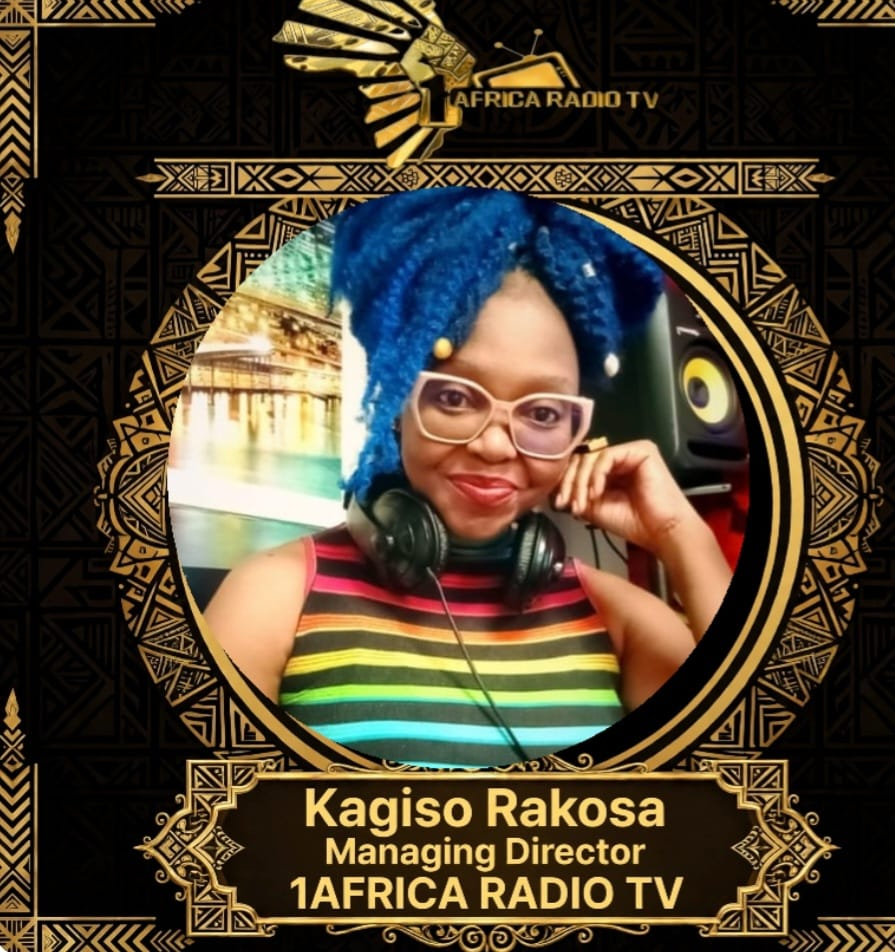
KAGISO RAKOSA
Managing Director
Being in the Entertainment Industry for over a decade, more specifically in the acting industry, in 2022, due to the love and another challenge I wanted to embark on, I walked into the studios of @1africaradiotv just hoping to shadow a presenter of what radio entitles.
BUT that led to being an intern for the weekend slot then moved to weekdays. Within the 3 years, the biggest move was when I was given the opportunity to host the Weekday Breakfast show being a huge platform which I'm still currently hosting.
I love challenges and my consistency, passion and also love for radio, I can proudly also say that I'm now the Managing Director of @1africaradiotv. This showcases that consistency brings upon growth of one’s passion.
BUT that led to being an intern for the weekend slot then moved to weekdays. Within the 3 years, the biggest move was when I was given the opportunity to host the Weekday Breakfast show being a huge platform which I'm still currently hosting.
I love challenges and my consistency, passion and also love for radio, I can proudly also say that I'm now the Managing Director of @1africaradiotv. This showcases that consistency brings upon growth of one’s passion.
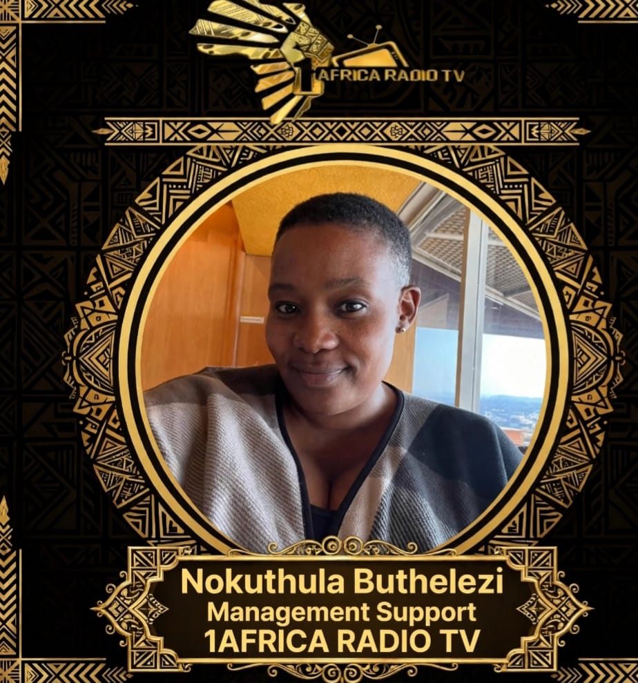
NOKUTHULA BUTHELEZI
Management Support
Expertise: Marketing Strategy, HR Management, Stakeholder Relations, Project Management.
With 13+ years of expertise across Human Resources, Project Management, and Strategic Brand Marketing, Nokuthula drives commercial revenue and corporate partnerships for 1AFRICARADIOTV.
Holding a Diploma in HR Management and a BA in Marketing & Project Management, she turns visionary concepts into actionable growth. Her focus includes youth and women empowerment, high-yield advertising decks, and multi-sector brand sponsorships.
“To lead and contribute to impactful, sustainable initiatives built on integrity, service, and collaboration.”
13+ Years Experience | Executive Office
Email: managementsupport@1africaradiotv.com
With 13+ years of expertise across Human Resources, Project Management, and Strategic Brand Marketing, Nokuthula drives commercial revenue and corporate partnerships for 1AFRICARADIOTV.
Holding a Diploma in HR Management and a BA in Marketing & Project Management, she turns visionary concepts into actionable growth. Her focus includes youth and women empowerment, high-yield advertising decks, and multi-sector brand sponsorships.
“To lead and contribute to impactful, sustainable initiatives built on integrity, service, and collaboration.”
13+ Years Experience | Executive Office
Email: managementsupport@1africaradiotv.com
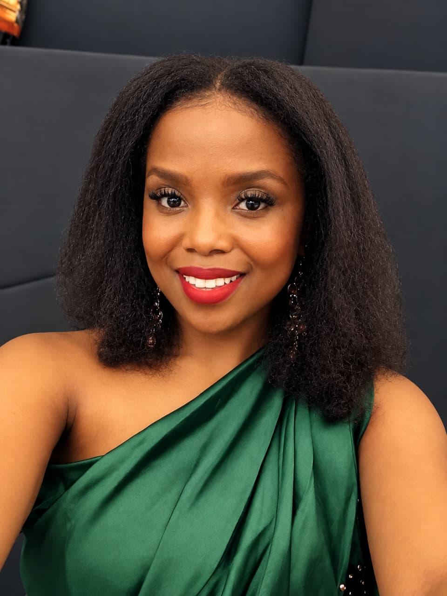
NOMTHANDAZO DLADLA
Head of Marketing and Sales
Nomthandazo Dladla is a dynamic fashion designer, entrepreneur, fashion lecturer, and corporate MC with over 15 years of experience in the fashion industry. She is the founder and owner of UJU DESIGNS, a fashion brand that celebrates confidence, individuality, and style.
Passionate about empowering others, she runs a sewing school in Diepkloof, where she equips her community with practical fashion skills and opportunities for growth.
Known for her intelligence, eloquence, and commanding presence, Nomthandazo also hosts corporate events and is a radio personality at 1AFRICARADIOTV, presenting Camico: 30th June and Beyond, every Wednesday to Friday from 18:00 to 20:00.
A visionary woman driven by creativity, empowerment, and purpose, Nomthandazo continues to inspire through fashion, education, and media.
Passionate about empowering others, she runs a sewing school in Diepkloof, where she equips her community with practical fashion skills and opportunities for growth.
Known for her intelligence, eloquence, and commanding presence, Nomthandazo also hosts corporate events and is a radio personality at 1AFRICARADIOTV, presenting Camico: 30th June and Beyond, every Wednesday to Friday from 18:00 to 20:00.
A visionary woman driven by creativity, empowerment, and purpose, Nomthandazo continues to inspire through fashion, education, and media.
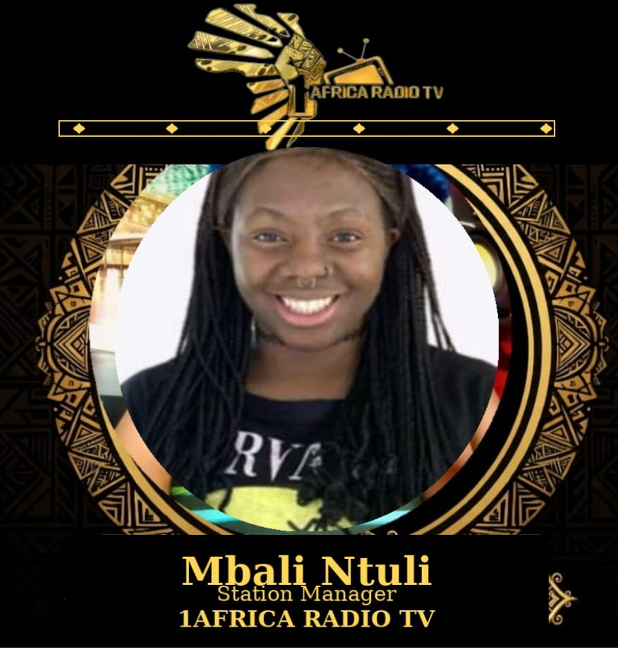
MBALI NTULI
Station Manager
Mbali is a dynamic radio presenter, content creator, and head of news and sports, delivering compelling stories with energy and insight. Passionate about African culture, societal trends, and sports, Mbali crafts engaging narratives that inform and entertain. Whether behind the mic or shaping headlines, Mbali brings creativity, depth, and a fresh perspective to every platform.
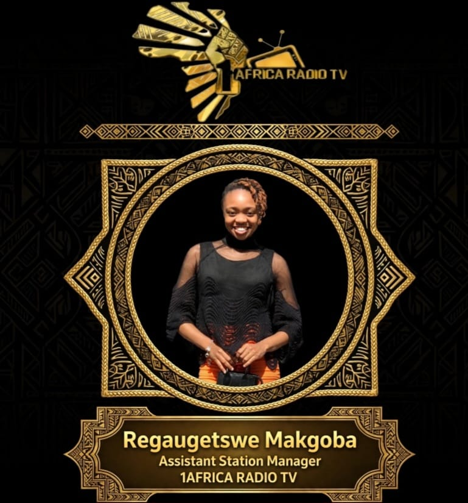
REGAUGETSWE MAKGOBA
Assistant Station Manager
Regaugetswe Makgoba serves as Assistant Station Manager, supporting daily broadcast operations and co-ordinating the station's programme schedule across all departments.
She is also the vibrant host of the Monday & Tuesday edition of Lunchtime Express (12:00 PM – 3:00 PM), where she brings energetic conversation, Afrobeats and Amapiano sounds, and engaging listener interaction to the midday slot. Her dual role bridges on-air talent with behind-the-scenes operational excellence, ensuring seamless delivery of 1Africa Radio TV's flagship programming.
Lunchtime Express Host | Station Operations | Broadcast Coordination
Email: station@1africaradiotv.com
She is also the vibrant host of the Monday & Tuesday edition of Lunchtime Express (12:00 PM – 3:00 PM), where she brings energetic conversation, Afrobeats and Amapiano sounds, and engaging listener interaction to the midday slot. Her dual role bridges on-air talent with behind-the-scenes operational excellence, ensuring seamless delivery of 1Africa Radio TV's flagship programming.
Lunchtime Express Host | Station Operations | Broadcast Coordination
Email: station@1africaradiotv.com
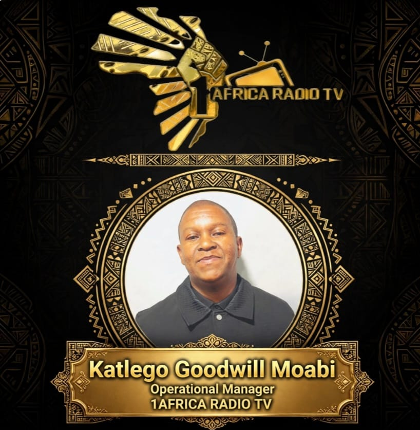
KATLEGO GOODWILL MOABI
Operational Manager
Composer K. Moabi – Professional Bio
Katlego Goodwill Moabi, professionally known as Composer K. Moabi, is a South African creative professional, DJ, music composer, radio producer and digital media specialist with a passion for music, broadcasting, entertainment and storytelling.
His DJ career began in the early 2000s, laying the foundation for a journey that would later expand into music production, composition and broadcasting. He further developed his musical expertise through formal studies in Music Composition, completing his N4, N5 and N6 qualifications.
Over the years, Composer K. Moabi has gained valuable experience across music production, radio broadcasting, content creation and digital media. He is currently part of the 1AfricaRadioTV team, where he contributes as a Social Media Manager, Producer and Composer, working closely with presenters, the production team and the marketing department to create engaging content and strengthen the station’s digital presence.
His work includes developing social media strategies, promotional campaigns, radio content, music compositions, creative concepts and digital media designed to connect audiences with the station and its personalities.
As a creative professional, Composer K. Moabi is passionate about developing African talent, telling meaningful stories and using media, music and technology to connect people across the continent. His vision is to continuously innovate, create opportunities and contribute to the growth of African media and entertainment.
Africa We Are One.
Katlego Goodwill Moabi, professionally known as Composer K. Moabi, is a South African creative professional, DJ, music composer, radio producer and digital media specialist with a passion for music, broadcasting, entertainment and storytelling.
His DJ career began in the early 2000s, laying the foundation for a journey that would later expand into music production, composition and broadcasting. He further developed his musical expertise through formal studies in Music Composition, completing his N4, N5 and N6 qualifications.
Over the years, Composer K. Moabi has gained valuable experience across music production, radio broadcasting, content creation and digital media. He is currently part of the 1AfricaRadioTV team, where he contributes as a Social Media Manager, Producer and Composer, working closely with presenters, the production team and the marketing department to create engaging content and strengthen the station’s digital presence.
His work includes developing social media strategies, promotional campaigns, radio content, music compositions, creative concepts and digital media designed to connect audiences with the station and its personalities.
As a creative professional, Composer K. Moabi is passionate about developing African talent, telling meaningful stories and using media, music and technology to connect people across the continent. His vision is to continuously innovate, create opportunities and contribute to the growth of African media and entertainment.
Africa We Are One.
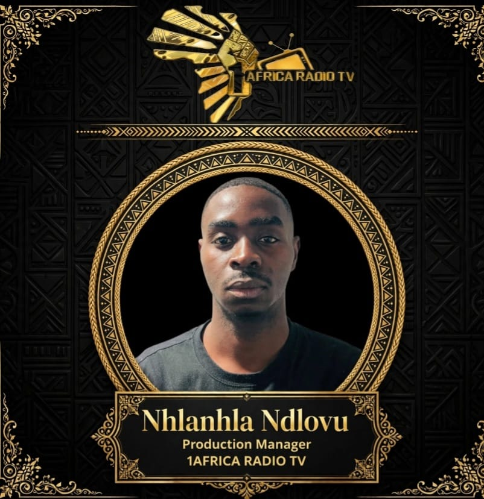
NHLANHLA NDLOVU
Head of Radio Producers
Nhlanhla Ndlovu is a creative media professional currently serving as the Head of Radio Producers, bringing a wealth of experience in radio production and digital media. His career has been shaped by a passion for storytelling, audience engagement, and high-quality content creation.
In addition to his work in radio, Nhlanhla has extensive experience in videography, video editing, and production assistance, giving him a well-rounded understanding of both the creative and technical aspects of media production. His ability to combine strong editorial judgment with practical production skills allows him to contribute effectively across multiple platforms and production environments.
Committed to innovation in broadcasting, Nhlanhla continues to support the development of compelling radio programming while fostering collaboration among producers, creators, and media professionals. His dedication to professional excellence and impactful storytelling makes him a valuable leader within the broadcasting industry.
In addition to his work in radio, Nhlanhla has extensive experience in videography, video editing, and production assistance, giving him a well-rounded understanding of both the creative and technical aspects of media production. His ability to combine strong editorial judgment with practical production skills allows him to contribute effectively across multiple platforms and production environments.
Committed to innovation in broadcasting, Nhlanhla continues to support the development of compelling radio programming while fostering collaboration among producers, creators, and media professionals. His dedication to professional excellence and impactful storytelling makes him a valuable leader within the broadcasting industry.
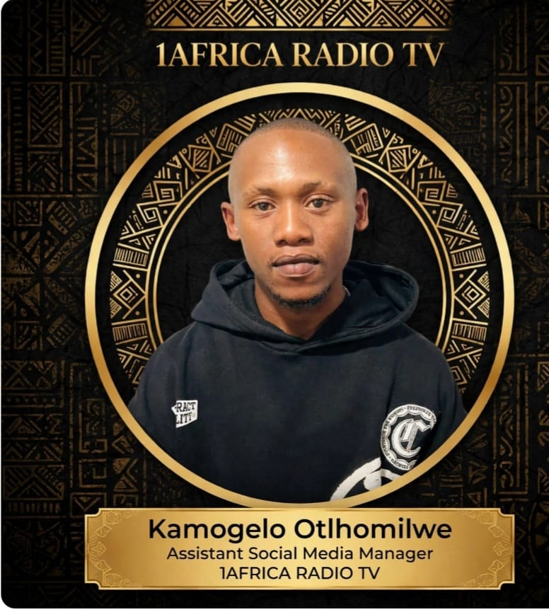
KAMOGELO OTLHOMILWE
Assistant Head of Producers | Social Media Assistant Manager
Kamogelo Otlhomilwe is a creative and versatile member of the 1Africa Radio TV Production Department, serving as Assistant Head of Producers and Social Media Assistant Manager.
Kamogelo contributes to the station's production operations and helps manage its digital presence. He also produces The Good Morning Africa Breakfast Show, airing Monday to Wednesday from 6:00 AM to 9:00 AM.
Beyond broadcasting, Kamogelo is a professional composer, music producer and rapper, bringing a strong passion for music, creativity and storytelling to the 1Africa Radio TV team.
Composer | Music Producer | Rapper | Radio Production
Kamogelo contributes to the station's production operations and helps manage its digital presence. He also produces The Good Morning Africa Breakfast Show, airing Monday to Wednesday from 6:00 AM to 9:00 AM.
Beyond broadcasting, Kamogelo is a professional composer, music producer and rapper, bringing a strong passion for music, creativity and storytelling to the 1Africa Radio TV team.
Composer | Music Producer | Rapper | Radio Production
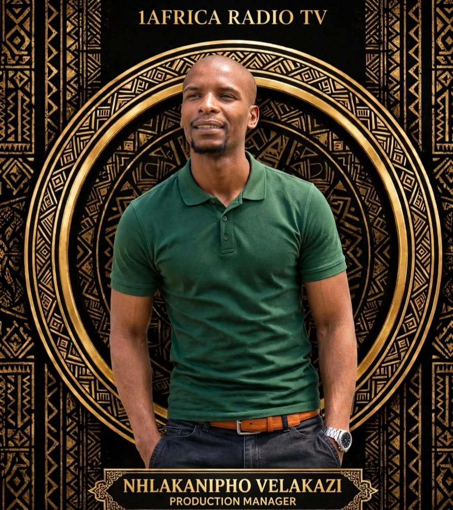
NHLAKANIPHO VILAKAZI
Production Manager
Thulasizwe Nhlakanipho Vilakazi is an accomplished Video Editor and Production Manager with extensive experience in multimedia content creation, Music Production. With a strong background in both visual storytelling and audio production, Thulasizwe Vilakazi specializes in creating engaging, high-quality content that enhances brand presence and connects with diverse audiences.
Currently serving as a Production Manager at 1AFRICARADIOTV, Thulasizwe Vilakazi oversees the end-to-end production process, from conceptualization to final delivery. Skilled in video editing, sound design, and project coordination, Thulasizwe Nhlakanipho Vilakazi ensures seamless integration of video and sound platforms to maximize audience engagement across digital and traditional channels.
Throughout their career, Thulasizwe Nhlakanipho Vilakazi has collaborated with creative teams, producers, and on-air talent to deliver compelling content, promotional campaigns, and live event coverage. Their expertise lies in managing deadlines, optimizing workflows, and maintaining production quality that aligns with industry standards.
Passionate about innovation in media, Thulasizwe Nhlakanipho Vilakazi is committed to pushing creative boundaries and leveraging new technologies to tell stories that resonate with audiences.
Currently serving as a Production Manager at 1AFRICARADIOTV, Thulasizwe Vilakazi oversees the end-to-end production process, from conceptualization to final delivery. Skilled in video editing, sound design, and project coordination, Thulasizwe Nhlakanipho Vilakazi ensures seamless integration of video and sound platforms to maximize audience engagement across digital and traditional channels.
Throughout their career, Thulasizwe Nhlakanipho Vilakazi has collaborated with creative teams, producers, and on-air talent to deliver compelling content, promotional campaigns, and live event coverage. Their expertise lies in managing deadlines, optimizing workflows, and maintaining production quality that aligns with industry standards.
Passionate about innovation in media, Thulasizwe Nhlakanipho Vilakazi is committed to pushing creative boundaries and leveraging new technologies to tell stories that resonate with audiences.
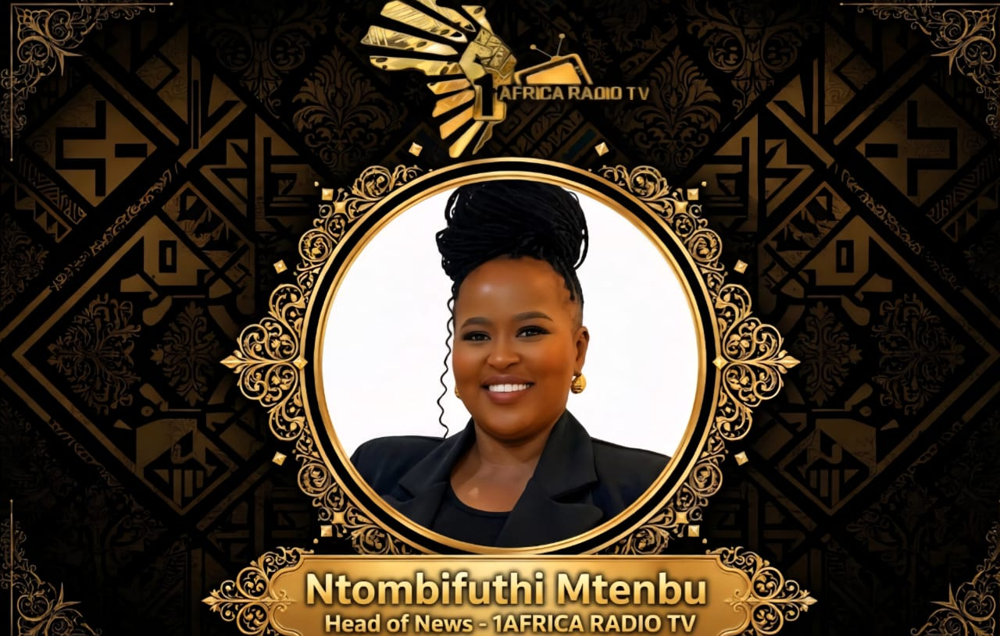
NTOMBIFUTHI MTEMBU
Program Manager
My Name is Ntombifuthi Mtembu, who discovered her voice and decided to use it to connect people. I am a passionate voice-over artist and aspiring MC who brings energy and professionalism when handling the mic.
Beyond the mic, I am a determined business owner who is growing and discovering herself in the business space.
My love for the mic landed me at 1AfricaRadioTV, which gave me an opportunity to learn about my African history, and now I have the privilege to tell the New African Story. I'm co-hosting the Good Morning Africa Breakfast Show, as well as news anchoring.
With many years of experience in leadership, I have developed exceptional leadership qualities. I am committed to leading and serving with excellence.
In any space I am in, I am dedicated and committed to making a lasting impact.
Beyond the mic, I am a determined business owner who is growing and discovering herself in the business space.
My love for the mic landed me at 1AfricaRadioTV, which gave me an opportunity to learn about my African history, and now I have the privilege to tell the New African Story. I'm co-hosting the Good Morning Africa Breakfast Show, as well as news anchoring.
With many years of experience in leadership, I have developed exceptional leadership qualities. I am committed to leading and serving with excellence.
In any space I am in, I am dedicated and committed to making a lasting impact.
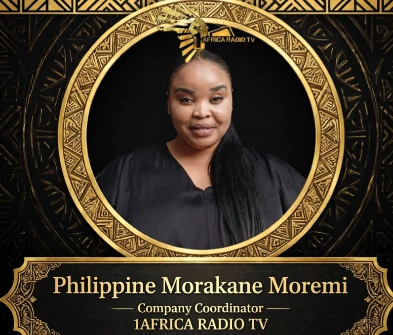
PHILIPPINE MORAKANE MOREMI
Company Co-ordinator
My name is phillipine morakane moremi, born and raised at Chloorkop edenvale, attended high school at kempton Park sir pierre van Ryneveld high school after completing my high school went to college to further my studies. In 2022 i pursued my acting career, worked with different production such as: Black brain (The black door Etv), Ayeye stripes session 2 Dstv, Mojalove, Detation Netflix, stockfela mzansi magic, Black Gold BET Dstv, and many more productions.
I joined a competition of plus size in 1AFRICA Radio TV, that's when i developed a passion For radio, i started as an intern, co-host, then Host. Hosting The weekend slot breakfast show from 6am to 9am. I worked my way-up now i am a company co - ordinator at 1africa Radio TV.
Hoping to keep the spirit and passion Burning and never drop the energy, in this way i will achieve more too come.
I joined a competition of plus size in 1AFRICA Radio TV, that's when i developed a passion For radio, i started as an intern, co-host, then Host. Hosting The weekend slot breakfast show from 6am to 9am. I worked my way-up now i am a company co - ordinator at 1africa Radio TV.
Hoping to keep the spirit and passion Burning and never drop the energy, in this way i will achieve more too come.
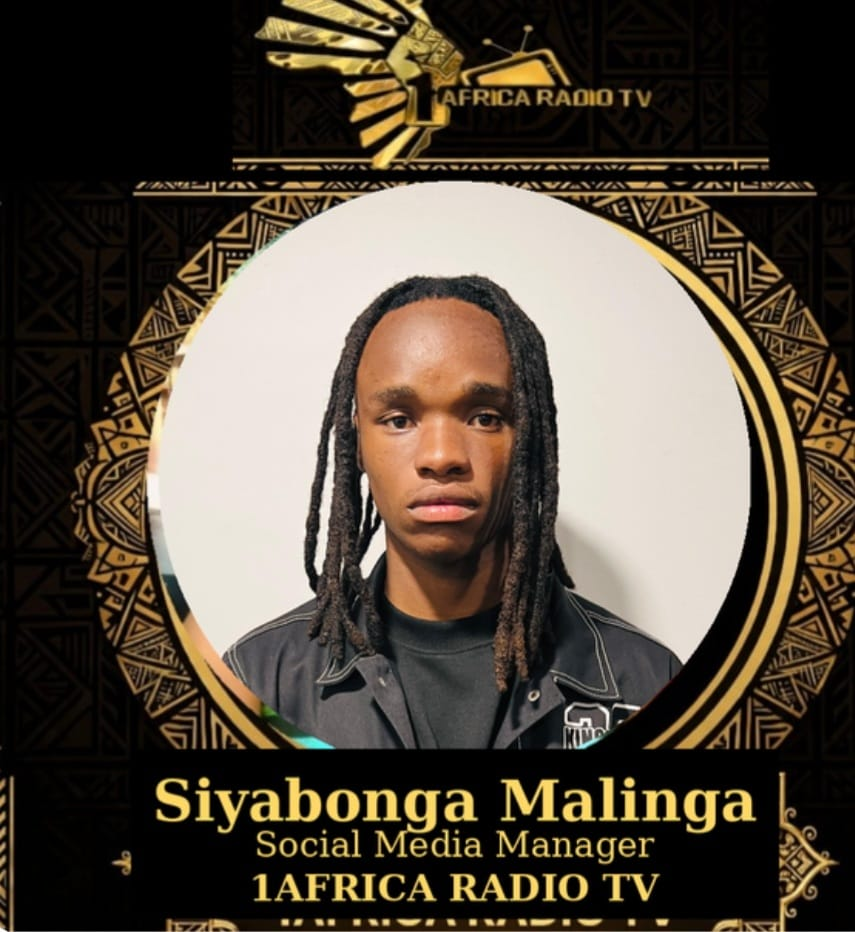
SIYABONGA MALINGA
Social Media Manager
Siyabonga Malinga is a dynamic digital strategist and the creative force behind 1Africa Radio TV's thriving online presence.
Passionate about storytelling and the African narrative, he specializes in building engaging communities, curating high-impact content, and amplifying the station's voice across all major social platforms. With a keen eye for trends and a deep understanding of digital engagement, Siyabonga ensures that the "Africa We Are One" spirit resonates with audiences both locally and globally. He is dedicated to bridging the gap between traditional broadcasting and the modern digital landscape.
Digital Community Builder
Passionate about storytelling and the African narrative, he specializes in building engaging communities, curating high-impact content, and amplifying the station's voice across all major social platforms. With a keen eye for trends and a deep understanding of digital engagement, Siyabonga ensures that the "Africa We Are One" spirit resonates with audiences both locally and globally. He is dedicated to bridging the gap between traditional broadcasting and the modern digital landscape.
Digital Community Builder
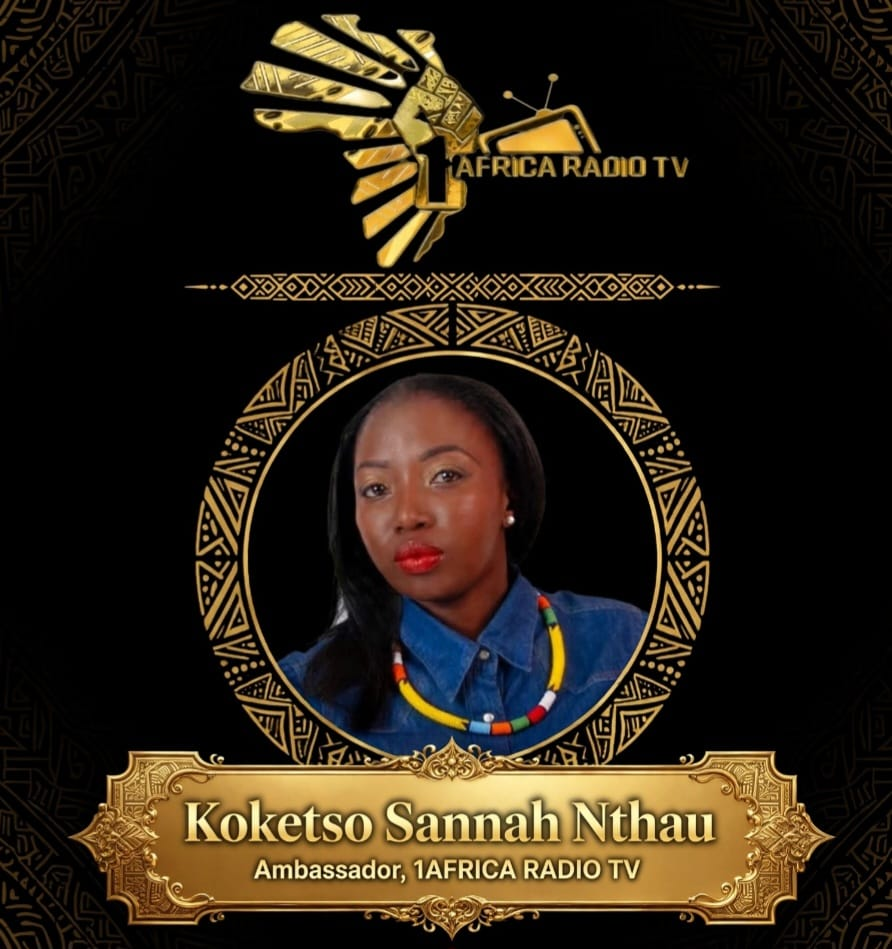
KOKETSO SANNAH NTHAU
Brand Ambassador | 1Africa Radio TV
Koketso Sannah Nthau, is an influential model, radio presenter, and purpose-driven entrepreneur.
Serving as Brand Ambassador for 1AFRICARADIOTV, Koketso brings elegance, authenticity, and heart to our broadcast initiatives. Through nationwide youth mentorship and cross-media campaigns, she champions African creativity, self-love, and communal inspiration.
Model | Radio Presenter | Voice-Over Artist | Motivational Speaker
Leading with Love, Inspiring with Purpose.
Email: ambassador@1africaradiotv.com
Championing African Creativity
Serving as Brand Ambassador for 1AFRICARADIOTV, Koketso brings elegance, authenticity, and heart to our broadcast initiatives. Through nationwide youth mentorship and cross-media campaigns, she champions African creativity, self-love, and communal inspiration.
Model | Radio Presenter | Voice-Over Artist | Motivational Speaker
Leading with Love, Inspiring with Purpose.
Email: ambassador@1africaradiotv.com
Championing African Creativity

GUGULETHU SHILI
Personal Assistant to the CEO
I’m an entrepreneur who believes in growing like a bamboo tree—rooted, resilient, and built to rise. With ventures spanning media, construction, and property, I focus on transforming vision into tangible impact. I don’t just chase opportunities—I cultivate them patiently until they break through and redefine what’s possible.
“Loyalty is a two-way street. If I’m asking for it, you’re surely getting it from me.” The Assistant to the CEO
“Loyalty is a two-way street. If I’m asking for it, you’re surely getting it from me.” The Assistant to the CEO
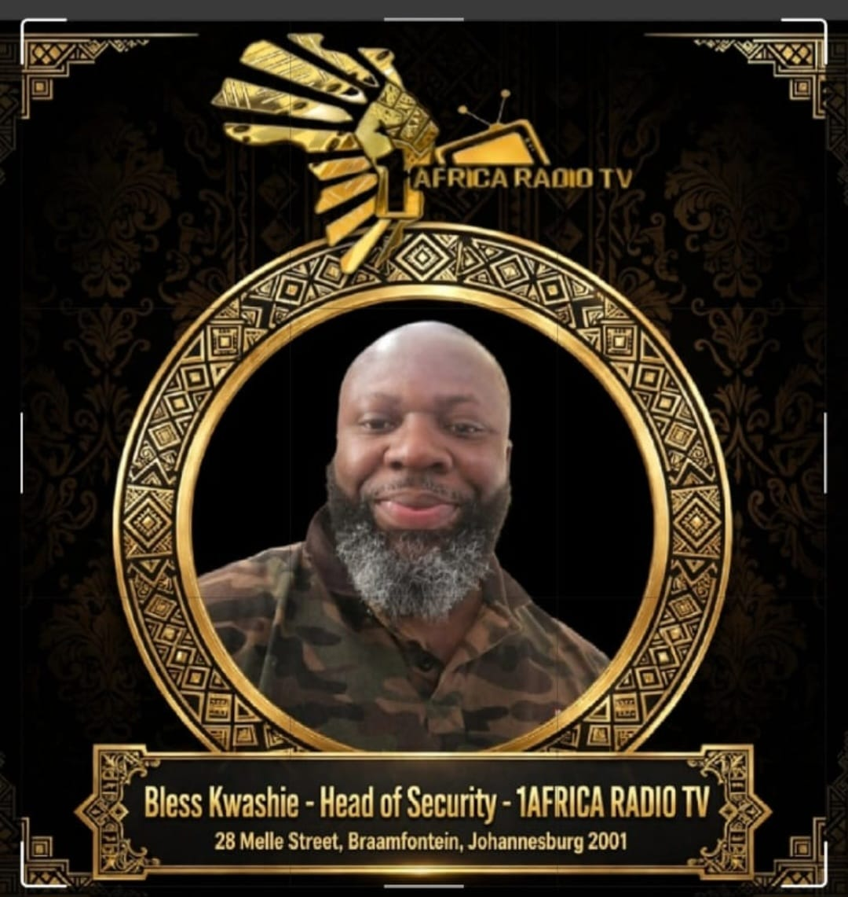
MR BLESS KWASHIE
Head of Security
Mr Bless Kwashie is the first born to Ex Sergeant FAK Kwashie. As a military barracks boy, the passion to join the Army led him to join the school cadet core. His ambition to head a security company is without any doubt. Notable amongst them was Intercom GH and Department of State- Fire Protection (US Embassy -Ghana). His supervisory roles won the hearts of the embassy and was recognized with certificates and awards for his OUTSTANDING PERFORMANCE.